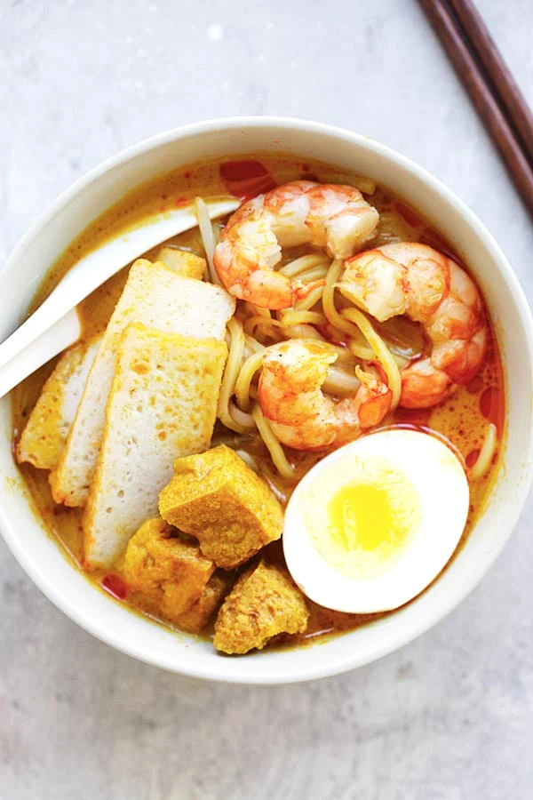

Penang Assam Laksa
Penang Assam Laksa is a signature Malaysian dish, particularly famous for its rich, spicy, and tangy fish broth. This noodle soup is made using mackerel or other white fish, infused with tamarind for its distinct sour flavor. The dish is typically served with thick rice noodles and garnished with fresh ingredients like cucumber, mint leaves, and onions, making it a delightful combination of flavors and textures.

| Recipe Details |
| Portion |
4 servings |
| Preparation Time |
15 minutes |
| Cooking Time |
40 minutes |
| Difficulty |
Easy |
| Cuisine |
Malaysian |
| Taste Profile |
Spicy, tangy, and savory |
| Serving Suggestions |
Best served hot with fresh garnishes |
| Nutrition Facts (per serving) |
| Calories |
350 kcal |
| Fat |
12g |
| Saturated Fat |
4g |
| Carbohydrates |
45g |
| Sugar |
6g |
| Protein |
15g |
| Sodium |
900mg |
| Ingredients |
Measurement |
| Fresh mackerel or other white fish |
500 g, cleaned |
| Tamarind paste |
2 tbsp, diluted in 1 cup of water |
| Lemongrass, bruised |
2 stalks |
| Red chilies, sliced |
3-4 |
| Shallots, chopped |
5-6 |
| Ginger, sliced |
1 inch |
| Garlic cloves, chopped |
2 |
| Fresh mint leaves |
for garnish |
| Cucumber, julienned |
1 small |
| Red onion, thinly sliced |
1 small |
| Thick rice noodles |
400 g, cooked according to package instructions |
| Fish sauce |
1 tbsp |
| Sugar |
1 tbsp |
Instructions:
- In a large pot, bring water to a boil and cook the fish until tender, about 10 minutes. Remove the fish, let cool, then separate the meat from the bones, reserving the fish stock.
- In a blender, combine tamarind paste, red chilies, shallots, ginger, and garlic. Blend into a smooth paste.
- Heat oil in a large pot over medium heat. Add the paste and cook until fragrant, about 5 minutes. Add the fish stock, lemongrass, and tamarind water. Simmer for 20 minutes.
- Stir in fish sauce and sugar, adjusting to taste. Add the cooked fish meat back into the broth and simmer for another 5 minutes.
- To serve, divide the cooked rice noodles into bowls. Ladle the hot broth over the noodles, then garnish with mint leaves, cucumber, red onion, and extra red chilies if desired.